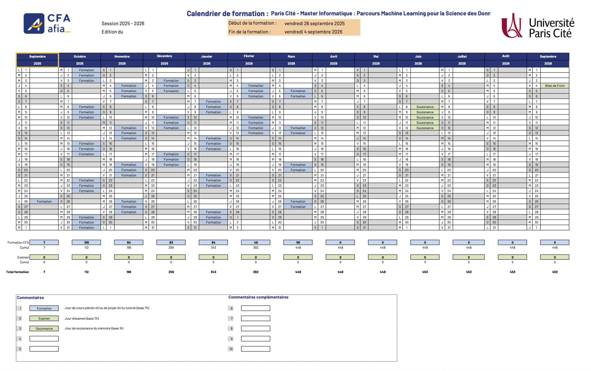

Emploi du temps – Semaine en cours
Calendrier de formation 2025–2026
Valable pour MLSD FI & FA (2025–2026).
Termes statistiques essentiels
Variance : Mesure de la dispersion des données autour de la moyenne. Plus la variance est grande, plus les données sont dispersées.
Biais (Bias) : Différence entre la valeur attendue d'un estimateur et la vraie valeur d'un paramètre. Un modèle biaisé peut manquer de précision.
Écart-type (Standard Deviation) : Racine carrée de la variance. Il exprime la dispersion des données par rapport à la moyenne dans la même unité que les données.
Quartiles : Valeurs qui divisent un ensemble de données en quatre parties égales. Le premier quartile (Q1), la médiane (Q2), et le troisième quartile (Q3).
Loi de Bernoulli : Loi de probabilité qui décrit une expérience aléatoire ayant deux issues possibles (succès ou échec), avec une probabilité fixe de succès.
Loi binomiale : Généralisation de la loi de Bernoulli pour plusieurs essais indépendants. Elle modélise le nombre de succès dans un nombre d'essais donnés.
Loi normale (Gaussian Distribution) : Distribution de probabilité symétrique en forme de cloche, caractérisée par la moyenne et l'écart-type. Très utilisée pour modéliser des phénomènes naturels.
Loi de Poisson : Distribution de probabilité qui modélise le nombre d'événements se produisant dans un intervalle de temps ou d'espace, sous certaines conditions.
Espérance mathématique (Expected Value) : Moyenne pondérée des résultats d'une variable aléatoire. C'est la valeur centrale attendue d'une expérience aléatoire.
P-value : Probabilité de rejeter l'hypothèse nulle alors qu'elle est vraie. Utilisée dans les tests d'hypothèses pour évaluer la significativité statistique.
Intervalle de confiance (Confidence Interval) : Plage de valeurs qui, avec une certaine probabilité, contient la vraie valeur d'un paramètre statistique.
Régression linéaire : Technique statistique utilisée pour modéliser la relation entre une variable dépendante et une ou plusieurs variables indépendantes.
Surapprentissage (Overfitting) : Situation où un modèle est trop ajusté aux données d'entraînement, ce qui nuit à sa généralisation sur des données nouvelles.
Sous-apprentissage (Underfitting) : Modèle trop simple pour capturer les relations sous-jacentes dans les données, conduisant à une mauvaise performance.
Matrice de confusion : Tableau utilisé pour évaluer la performance d'un modèle de classification en comptant les vraies et fausses prédictions.
Test d'hypothèse : Méthode statistique pour tester une affirmation sur un paramètre de population en utilisant les données d'un échantillon.
Bootstrap : Technique de rééchantillonnage qui permet d'estimer les propriétés d'un estimateur en rééchantillonnant avec remplacement.
AIC/BIC : Critères utilisés pour comparer différents modèles statistiques et choisir le meilleur modèle en fonction de sa qualité ajustée.
Analyse en composantes principales (ACP) : Méthode de réduction de dimensionnalité qui transforme des variables corrélées en nouvelles variables non corrélées tout en conservant l'essentiel de la variance.
Matrice : Un tableau de nombres disposés en lignes et en colonnes, utilisé pour organiser des ensembles de données et des transformations linéaires.
Covariance : Mesure de la manière dont deux variables varient ensemble. Si la covariance est positive, les deux variables augmentent ensemble, si elle est négative, elles varient en sens inverse.
Matrice de covariance : Matrice carrée qui présente les covariances entre chaque paire de variables dans un ensemble de données.
Vecteur : Une liste ordonnée de nombres qui représente une quantité ayant une direction et une magnitude. Les vecteurs sont utilisés dans des espaces de haute dimension.
Autovalues (Valeurs propres) : Les scalaires associés aux vecteurs propres d'une matrice. Utilisées pour comprendre des caractéristiques fondamentales des transformations linéaires.
Autovecteurs (Vecteurs propres) : Les vecteurs associés aux valeurs propres qui ne changent pas de direction lors de la transformation par une matrice.
Régularisation : Technique utilisée pour ajouter une pénalité aux modèles statistiques afin d’éviter le surapprentissage.
Régression Ridge : Forme de régression linéaire qui inclut une régularisation L2 pour pénaliser les grands coefficients afin de réduire le surapprentissage.
Régression Lasso : Forme de régression linéaire qui inclut une régularisation L1 pour favoriser la parcimonie en forçant certains coefficients à zéro.
Gradient Descent : Algorithme d'optimisation utilisé pour minimiser la fonction de coût dans les modèles d’apprentissage machine.
Matrice de corrélation : Une matrice qui montre la corrélation entre chaque paire de variables. Utile pour repérer les relations linéaires entre les variables.
Loi des grands nombres : Théorème indiquant que, à mesure que le nombre d'échantillons augmente, la moyenne d’un échantillon approche la moyenne théorique de la population.
Théorème central limite : Théorème stipulant que la somme ou la moyenne de variables aléatoires indépendantes tend vers une distribution normale à mesure que la taille de l’échantillon augmente.
Maximum de vraisemblance (MLE) : Méthode d’estimation des paramètres d’un modèle statistique en maximisant une fonction de vraisemblance.
Algorithme K-means : Algorithme de clustering non supervisé qui partitionne les données en k groupes en minimisant la distance intra-cluster.
Réseaux bayésiens : Structures de données en forme de graphe qui représentent les relations probabilistes entre des variables.
K-Nearest Neighbors (K-NN) : Algorithme utilisé pour la classification basé sur la similarité des points voisins dans l'espace des données.
Distance euclidienne : Mesure de la distance directe entre deux points dans un espace multi-dimensionnel. Utilisée dans les algorithmes de clustering.
Normalisation et standardisation : Techniques de prétraitement des données qui ramènent les données dans un intervalle fixe ou une distribution normalisée.
Test de Chi-carré : Test statistique utilisé pour déterminer si une relation existe entre deux variables catégorielles.
Méthode des moindres carrés : Méthode utilisée pour ajuster un modèle de régression en minimisant la somme des carrés des différences entre les valeurs observées et prédites.
Variance expliquée : Proportion de la variance totale d'un ensemble de données qui est expliquée par un modèle statistique.
Effet de levier (Leverage) : Mesure de l'influence d'un point de données sur la régression.
Information Entropy (Entropie) : Mesure de l'incertitude ou de la quantité d'information contenue dans une variable aléatoire.
Mutual Information : Mesure de la dépendance entre deux variables, quantifiant combien connaître la valeur d'une variable réduit l'incertitude de l'autre.
Cross-validation : Technique utilisée pour évaluer la performance d’un modèle en le testant sur plusieurs sous-ensembles des données.
Random Forest : Algorithme basé sur la création de multiples arbres de décision pour améliorer la précision et réduire le risque de surapprentissage.
Réseaux de neurones convolutifs (CNN) : Type de réseau de neurones spécialisé dans le traitement des données structurées en grille, comme les images.
Réseaux de neurones récurrents (RNN) : Type de réseau de neurones adapté aux séquences de données, où les informations des étapes précédentes influencent les prédictions actuelles.
Courbe ROC (Receiver Operating Characteristic) : Courbe utilisée pour évaluer les performances d'un modèle de classification en traçant le taux de vrais positifs contre le taux de faux positifs.
AUC (Area Under the Curve) : Surface sous la courbe ROC, utilisée comme une mesure de performance globale d’un modèle de classification.
Batch Normalization : Technique utilisée dans les réseaux de neurones pour normaliser les activations d'une couche, accélérant l'entraînement et améliorant la stabilité.
Dropout : Méthode de régularisation pour les réseaux de neurones consistant à désactiver aléatoirement certains neurones pendant l'entraînement afin de réduire le surapprentissage.
Ensemble Learning : Technique combinant plusieurs modèles pour améliorer la performance globale, comme le bagging, boosting ou stacking.
XGBoost : Implémentation optimisée de gradient boosting très performante pour les tâches de classification et de régression.
LightGBM : Bibliothèque de gradient boosting optimisée pour les gros ensembles de données, développée par Microsoft.
Odds Ratio : Mesure statistique exprimant le rapport des chances d'un événement entre deux groupes.
Coefficient de corrélation de Pearson : Mesure linéaire de la relation entre deux variables quantitatives, variant entre -1 et +1.
Coefficient de corrélation de Spearman : Mesure non paramétrique de corrélation basée sur les rangs des données.
Intervalle de crédibilité : Intervalle estimé dans lequel un paramètre a une probabilité donnée de se trouver, utilisé en statistique bayésienne.
Bayes' Theorem : Formule permettant de calculer la probabilité conditionnelle d’un événement à partir d’informations préalables.
Feature Engineering : Processus de création, transformation et sélection des variables (features) pour améliorer la performance d’un modèle.
One-Hot Encoding : Technique de transformation des variables catégorielles en variables binaires utilisables par les algorithmes de machine learning.
Word Embeddings : Représentations vectorielles des mots, comme Word2Vec ou GloVe, capturant les relations sémantiques entre mots.
Test t de Student : Test statistique utilisé pour comparer la moyenne de deux groupes et déterminer si la différence est significative.
ANOVA (Analyse de la variance) : Test statistique permettant de comparer les moyennes de plusieurs groupes.
Régression logistique : Modèle statistique utilisé pour prédire une variable binaire à partir de variables explicatives.
Elastic Net : Technique de régression combinant les régularisations L1 (Lasso) et L2 (Ridge).
Valeur aberrante (Outlier) : Observation qui s'écarte fortement des autres valeurs d'un jeu de données.
SMOTE (Synthetic Minority Over-sampling Technique) : Méthode de rééchantillonnage synthétique pour équilibrer des classes déséquilibrées.
Kurtosis (Aplatissement) : Mesure décrivant la forme de la distribution, en particulier la concentration des valeurs dans les queues.
Skewness (Asymétrie) : Mesure indiquant si une distribution est symétrique ou penche vers la gauche/droite.
Markov Chain : Modèle stochastique décrivant une séquence d’événements où la probabilité de chaque événement ne dépend que de l’état précédent.
Gradient Boosting : Méthode d’ensemble qui construit des modèles de manière séquentielle, chaque nouveau modèle corrigeant les erreurs des précédents.
CatBoost : Bibliothèque de gradient boosting optimisée pour les variables catégorielles, développée par Yandex.
Bagging : Technique d’ensemble qui entraîne plusieurs modèles indépendamment sur des échantillons bootstrapés, puis agrège leurs prédictions.
AdaBoost : Méthode de boosting adaptatif qui pondère les erreurs pour se concentrer sur les exemples difficiles à classer.
Hyperparameter Tuning : Processus d’optimisation des paramètres d’un modèle pour améliorer ses performances (grid search, random search, bayesian optimization).
Early Stopping : Technique d'arrêt anticipé de l'entraînement d’un modèle lorsque la performance sur un jeu de validation cesse de s'améliorer.
Distribution exponentielle : Distribution de probabilité continue utilisée pour modéliser le temps entre des événements dans un processus de Poisson.
Distribution Gamma : Distribution continue flexible utilisée en modélisation statistique et en théorie des files d'attente.
Distribution Beta : Distribution continue définie sur [0,1], souvent utilisée pour modéliser des proportions et des probabilités.
Processus de Poisson : Modèle stochastique décrivant le nombre d’événements se produisant dans un intervalle de temps fixe.
Colinéarité : Situation où deux ou plusieurs variables explicatives sont fortement corrélées, rendant l’estimation des coefficients instable.
Multicolinéarité : Forme extrême de colinéarité impliquant plusieurs variables, pouvant affecter la robustesse des modèles linéaires.
Analyse discriminante linéaire (LDA) : Méthode de classification qui projette les données sur un espace de dimension réduite maximisant la séparation entre classes.
Régression polynomiale : Extension de la régression linéaire qui modélise des relations non linéaires en introduisant des puissances des variables explicatives.
Régression PLS (Partial Least Squares) : Méthode adaptée aux données fortement corrélées et aux situations avec plus de variables que d’observations.
Norme vectorielle : Mesure de la taille ou de la longueur d’un vecteur, comme les normes L1, L2 et L∞.
Produit scalaire : Opération entre deux vecteurs donnant un nombre, représentant la projection d’un vecteur sur un autre.
Produit matriciel : Opération qui combine deux matrices pour produire une troisième, utilisée dans de nombreuses transformations linéaires.
Décomposition en valeurs singulières (SVD) : Factorisation d’une matrice en trois matrices, utilisée pour la réduction de dimension et la compression.
Apprentissage par transfert (Transfer Learning) : Réutilisation d’un modèle pré-entraîné sur un problème similaire pour accélérer l’apprentissage sur un nouveau problème.
Apprentissage semi-supervisé : Technique exploitant à la fois des données étiquetées et non étiquetées pour améliorer les performances d’un modèle.
Apprentissage auto-supervisé : Technique où un modèle génère ses propres labels à partir des données brutes pour pré-entraîner ses représentations.
GAN (Generative Adversarial Network) : Architecture de deep learning composée d’un générateur et d’un discriminateur, utilisée pour créer des données synthétiques réalistes.
Autoencoder : Réseau de neurones entraîné à reconstruire ses entrées après les avoir compressées, utilisé pour la réduction de dimension et la détection d’anomalies.
Plan du bâtiment principal